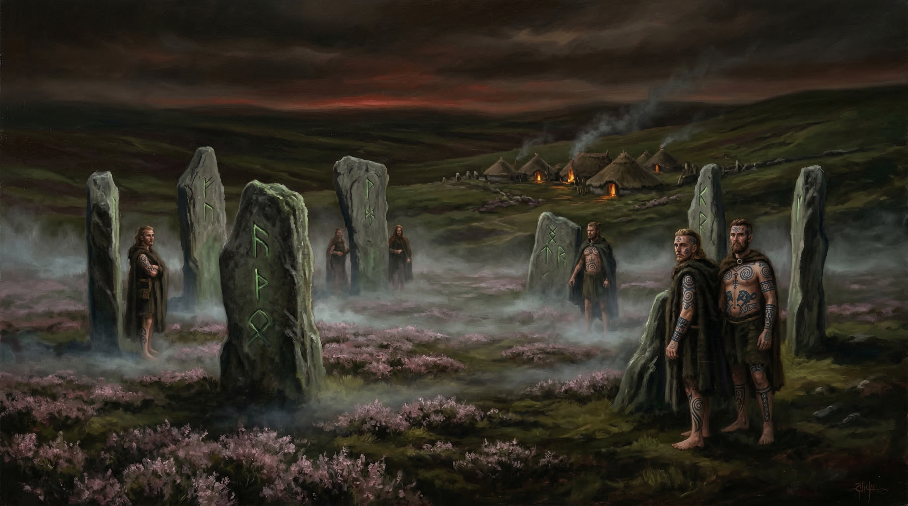

Blood & Stone
Blood & Stone is the Celtic Iron Age setting of the Heptaverse — a windswept world of hill forts, sacred groves, and mist-covered moorland where tribal confederations hold fast against the advancing armies of southern kingdoms that call themselves civilised. Kingdoms that tear down standing stones and salt the old ceremonial grounds in the name of progress.
At the heart of the setting are the Stone-Touched — those who have survived the rites of ritual scarification and the stone-binding ceremonies. Their blood resonates with the ancient monolith networks. Through bloodline and ceremony, they commune with ancestral voices, coordinate across vast distances, and feel the slow unravelling of a world whose sacred infrastructure is being dismantled stone by stone. The runes carved into the standing stones are the living circuitry of this civilisation — the unique mechanic of Blood & Stone, and the language through which the dead still speak.
Five monolith networks form the backbone of confederation life: the Wind-Speaker stones carry thought across vast distances, War-Caller stones bind warriors in coordinated battle-fury, Life-Binder stones preserve ancestral knowledge after the last elder is gone, Dream-Walker stones surface prophecy in sleeping minds, and Way-Finder stones guide the confederation's hidden roads. Every destroyed circle is a permanent wound in a network that cannot be rebuilt.
As the Seelie and Unseelie Courts watch from the thinning boundary between worlds, the question that defines Blood & Stone becomes unavoidable: how much will you sacrifice to keep the old ways alive?
Peoples of the Confederation
Three distinct populations inhabit the Blood & Stone setting — each with a different relationship to the confederation experiment, and none fully aware of the true nature of the forces moving around them.
The Seven Paths of the Stone-Touched
Seven paths serve the confederation — each one a role the old ways require, and each one systematically targeted by the south's civilising programme. As sacred sites fall and stone networks weaken, every path becomes harder to walk.
The Five Monolith Networks
The runes carved into the standing stones are the living circuitry of confederation life — not mystical decoration but active infrastructure. Five specialised networks of monoliths form the nervous system of tribal civilisation. Every destroyed circle is a permanent wound. Every severed connection a voice the dead can no longer use.
The Wild Courts
As sacred sites fall and stone networks weaken, the barriers between this world and the Fey realm do not hold. The Courts exist in parallel to the confederation experiment — chaotic alternatives to both tribal tradition and southern order. Pactmages forge alliances here out of necessity. What they receive in return reshapes them in ways neither side of the mortal conflict can account for.